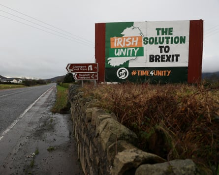

I n Northern Ireland , it used to be the one goal that everyone could agree on: reconciliation. Whether the region stayed in the UK or united with Ireland, all sides acknowledged the need to heal wounds from the Troubles and to bridge differences between Catholics and Protestants.
Even those who riled the other side invoked reconciliation. How could they not? It was self-evidently a good thing.
Not any more. Increasing numbers of nationalists say the R-word has been hijacked and twisted to block their campaign for a referendum on unification.
“The goal of reconciliation is very worthy but it is being manipulated and bastardised,” said Kevin Rooney, the founder of Irish Border Poll , a group that lobbies for a referendum. “It has become an undisguised unionist veto.”
Rooney and others fear that an elusive, ill-defined rapprochement between Northern Ireland’s two biggest blocs is morphing into a precondition that gives unionists and the Irish and British governments a pretext to dodge a referendum.
For Rooney, such a precondition would entrench the status quo in an entity designed a century ago for unionist dominance – and paradoxically undermine reconciliation. “It creates a perverse incentive for hardline loyalists to resist everything and threaten violence.”
Under this scenario, tensions associated with the traditional summer marching season, or the Irish-language rap trio Kneecap’s outspoken statements on British rule, or any number of controversies, can be harnessed as purported evidence that Northern Ireland is not ready for a vote on its constitutional future.
Stalled momentum for unification compounds nationalist anxiety: in Northern Ireland, Catholic birthrates are dwindling, the Brexit shock has faded, and Sinn Féin faltered in Ireland’s election last November, paving the way for a renewed Fianna Fáil/Fine Gael coalition government that is in no rush for a referendum.
Simon Harris, the tánaiste, has said he does not expect a vote this decade and that it is not a priority. The taoiseach, Micheal Mártin, has emphasised not unification but the government’s Shared Island Initiative , which promotes reconciliation and cross-border cooperation and infrastructure.
Dublin, in other words, is not putting pressure on Keir Starmer’s government for a referendum, which under the Good Friday agreement must be called if it appears that most people in Northern Ireland would vote to leave the UK.
The combined vote share for Sinn Féin and the moderate nationalist Social Democratic and Labour party ( SDLP ) has hovered at about 40% since 1998, a stagnation that has persisted despite the number of Catholics overtaking Protestants, but dwindling support for unionist parties has tilted recent elections to pro-unification candidates.
An anti-Brexit billboard at the border between the Republic of Ireland and Northern Ireland in May 2022.Photograph: Brian Lawless/PA
For nationalists who think the conditions for a referendum will soon be met, the focus on reconciliation has set off alarm bells. Colum Eastwood, an MP and former SDLP leader, criticised what he called a “creeping normalisation” to make it a prerequisite.
“Reconciliation is a moral imperative for our whole society – the southern establishment can’t use it to justify telling citizens in the north that we can’t have a decent economy, jobs and public services,” he tweeted.
Elaborating via email, Eastwood said creating a new, united Ireland could advance reconciliation. “Will there be tension? Yes. Can we confront that in a way that promotes understanding and actually contributes to reconciliation? Absolutely. We shouldn’t run away from that – we should be rushing into that space,” he said.
Leo Varadkar, the former taoiseach, has urged the current Irish government to push for a referendum, saying the Irish state would not have been founded in 1922, nor would there have been a Good Friday agreement, if full reconciliation had been a precondition. A “50 plus one” vote in favour of unification would suffice, he told the Féile an Phobail festival in Belfast last week. “A majority is a majority” but it would be better to have “maximum consent”, he said.
Michelle O’Neill, Sinn Féin’s Northern Ireland first minister, told a republican commemoration last weekend that the party remained “laser focused” on unity and urged the Irish government to put the matter before a citizens’ assembly.
A report by Ireland’s Future , a non-profit that advocates unification, notes that the Good Friday agreement does not insist on reconciliation before a referendum. “Our view is that any such objective will only follow the transition to a new constitutional arrangement on our shared island. Reunification is a reconciliation project,” it says.
However, others – unionists as well as some nationalists – say it would be reckless to call a vote for existential change unless and until Northern Ireland’s sectarian tensions ease.
“Demands for a referendum will only add to communal polarisation and be entirely counter-productive,” said Liam Kennedy, a history professor at Queen’s University Belfast.
He cited the so-called peace walls that divide Catholic and Protestant areas and the region’s “unstable equilibrium” as warnings. “We need a much higher degree of reconciliation to lay the foundations of a united Ireland that would work. It would be madness for the republic to take on the political and financial burdens of unification unless it was clear most people in Northern Ireland were either satisfied with or at least accepting of Irish unity.”
David Adams, who helped to broker the loyalist paramilitary ceasefire in 1994, said segregated housing and education had “corralled” Catholics and Protestants and embedded tribalism. “There is no violence but we remain divided. Without some sign of reconciliation advancing I don’t think the republic would touch this place with a barge pole.”
Peter Shirlow, the director of the University of Liverpool’s Institute of Irish Studies , said reconciliation had in fact progressed – he cited power-sharing at Stormont, integrated workplaces, mixed marriages – but that falling Catholic birthrates and static nationalist support had weakened the referendum push. “There ain’t going to be a border poll,” he said.
Trevor Ringland, a former international rugby player and unionist politician who served on the Northern Ireland Policing Board, said some referendum advocates undermined reconciliation by legitimising IRA violence during the Troubles. “They’ve been selling the message to young people that we had to kill our neighbours to achieve constitutional change.”
Ringland said songs such as Get Your Brits Out by Kneecap – “Brits out” was an IRA-era slogan – elided the British identity of many people in Northern Ireland. “The kids think they’re being edgy but edgy was being in the police, which meant you could get a bullet through you.”
Northern Ireland needed more reconciliation before voting on constitutional change, Ringland said. “Let’s keep a focus on building relationships and future generations can decide where to take it.”
Unity advocates, in contrast, believe constitutional change – to be achieved by winning elections in Northern Ireland and prodding the Irish government into action – is a task for the current generation.
Rooney said: “The Dublin establishment has been lukewarm about unity for quite a while – some basically want an easy life and don’t want to think about the north at all. It’s our job to win them over.”